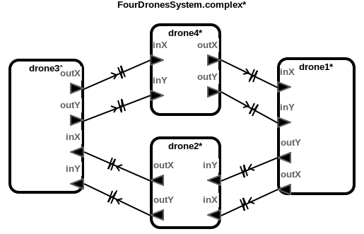

Drone Formation Models with Single-Integrator Dynamics
This benchmark models represent the rendezvous control of distributed drones with single-integrator dynamics. Each drone communicates its own position and sets a proper velocity. The goal of these models is for all drones maintains a formation tracing the reference drone without any collision.
Download
You can download the benchmark model: Drone_Formation_Single.zip
Top-Level Components
We provide six cases of benchmark model: two, three and four drone components moving in one or two dimensional plane.
Architecture

HybridSynchAADL Model: Controller and Environment
Controller.aadl
Safety Requirement
We analyze the safety invariant property where drones do not collide up to bound 500 ms. four-2d-inv-false.pspc
Analysis Results